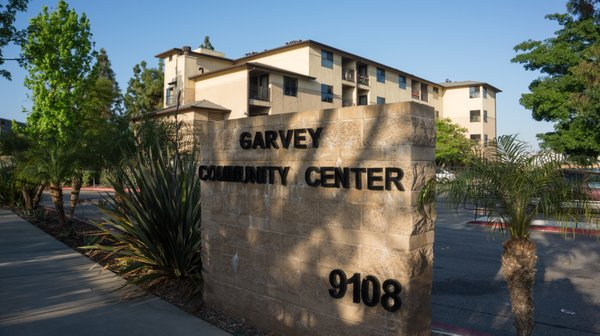
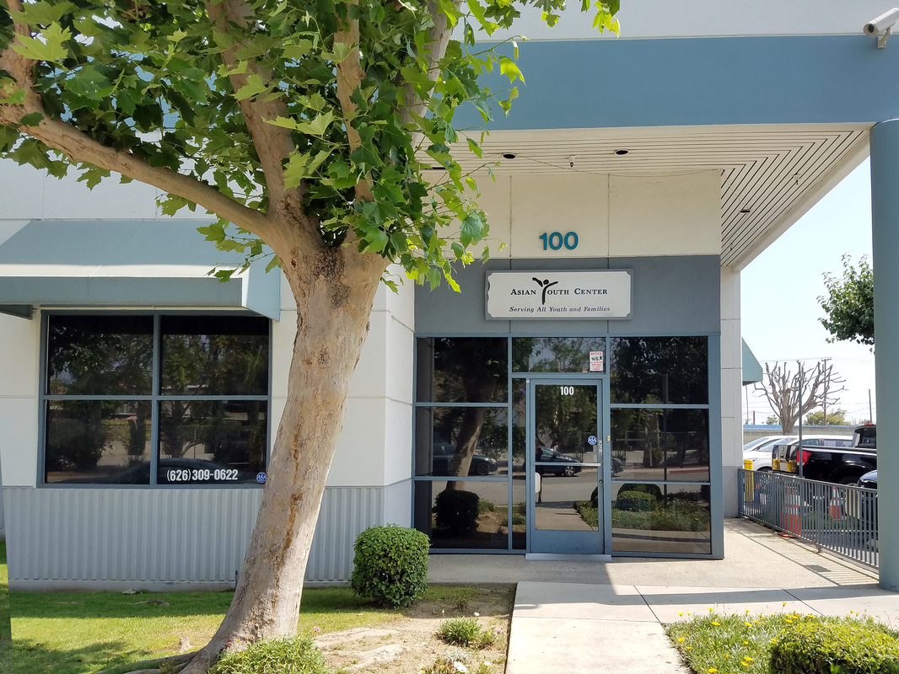
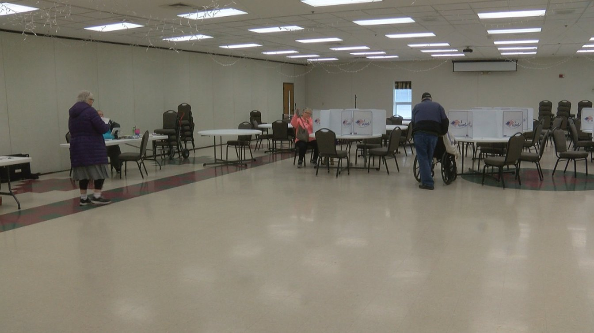
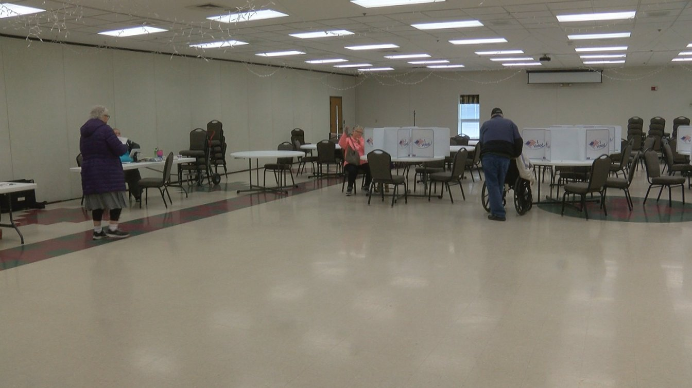
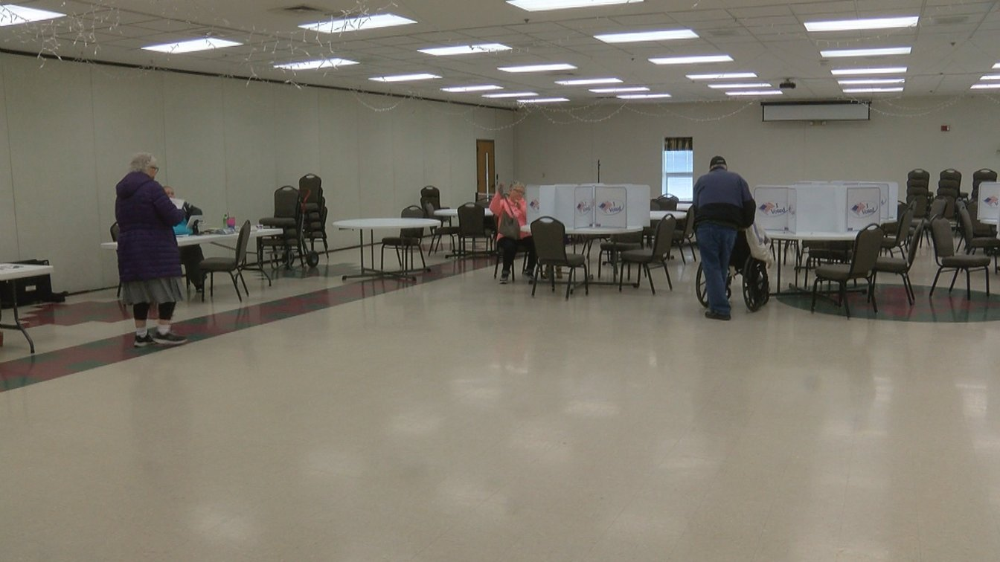

Allan Vuong
I am an undergraduate student currently studying to earn a degree in History/Administrative Studies. I'm currently in the second year of college and plan on furthering my academic career by joining clubs and perhaps getting into law. Law is something
that interests me because it plays a pivotal role in setting the conditions we live our lives within the confines of our country. To learn about this topic would not further my career opportunities but expand my knowledge into new territory.
As to which clubs I'll be joining, I currently am on the search for which one will suit me. On the UCR campus, there is a variety of different clubs to join but because I am focused on studying, I have not made the time to search through the
catalog of clubs. The clubs that I am currently searching for are ones that relate to my major. There are many in science and computers but I have yet to find one in history.
The reason why I chose to study history as a major was that I believe that it has real-world applications. The world is more than just you and me, there are a vast number of different cultures out there. Each of those cultures shape
and influence the actions of many people around the world. These actions can range from economic ventures to political decisions that will shape the lives of people in their country. By studying this field I will gain important knowledge to
better understand people. Without understanding, we never progress at whatever task we do because ignorance can be like a brick wall. This ignorance can come from ourselves and/or the opposing sides to whatever we are discussing or doing. I
also believe that since I will be getting into law, it is important to understand the histories and cultures of people so that I can fully understand what different effects legislation has on different people. The unfortunate reason being is
that not everyone has the same privileges as others and has different challenges that stem from different from our own.
For my past work experience, I have worked as a poll worker for the 2018 elections, volunteered as an intern for the Asian Youth Center and worked as a TA for Gabrielino Highschool. I don't have much work experience, but I plan on finding
new aspirations further down the line. As a poll worker, I encountered many different people. Each of them with a set of unique personality and although my interaction was brief, I learned just how important understanding is to communication.
I believe I will be able to as soon as COVID-19 begins to wane. The impact of the pandemic has made it difficult to find jobs that are best suited to everyone's interests. I believe that through perseverance that I can learn to obtain the necessary
experience to find a career that best fits me. Yet, that does not begin until I get the first job that requires me to put as much time as I do in education.
Experience
Pollworker
• Responsible for logging voter id
• ballot management
• ballot processing
Teaching Assistant
• help students with math
• Reviewed and graded student assigments and tests
• TA'd for over 30 students for a academic semester
Education
University of California Riverside
Portfolio


 

